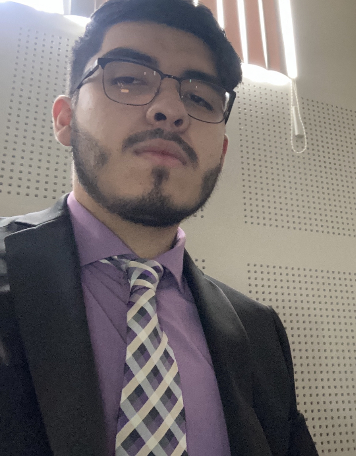
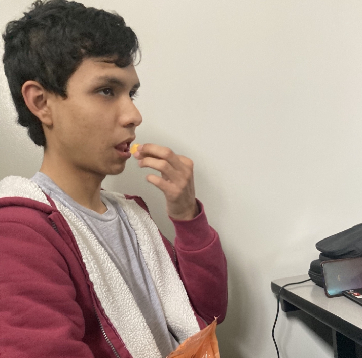
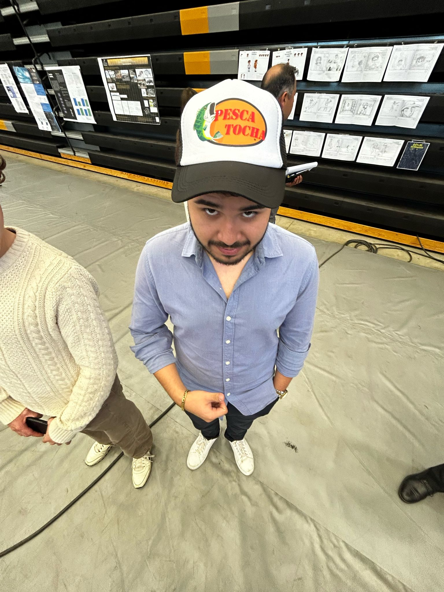
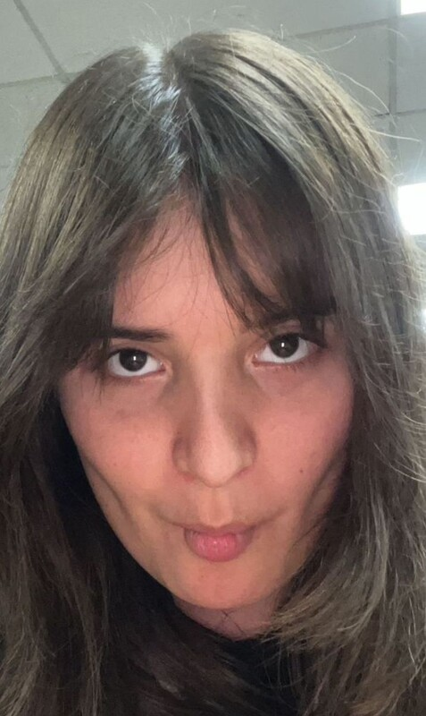
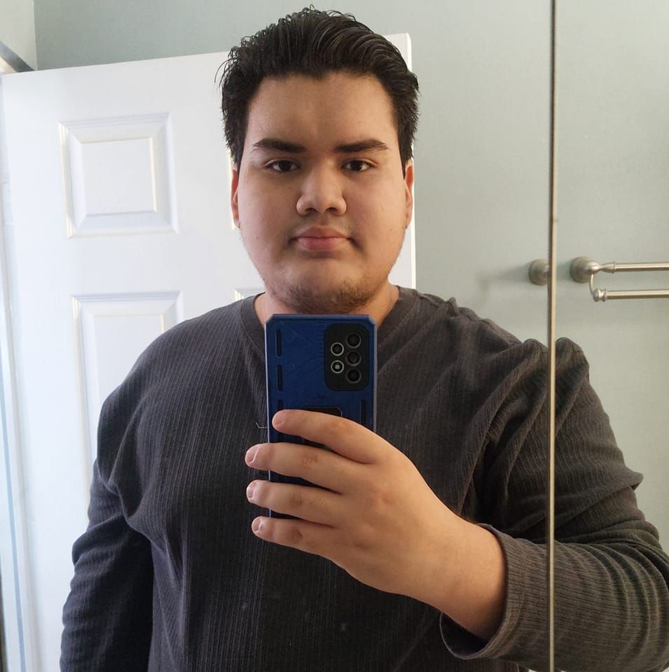
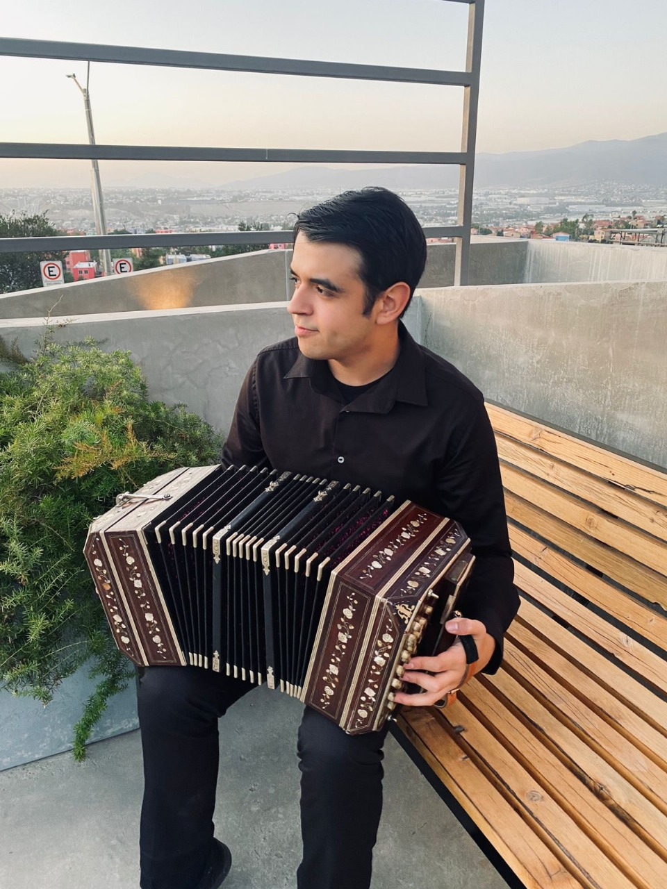

Carlos Zamora
CEO de Tocho Inc. y programador
Proyectos: Visa Please, Ajedrez Tocho, Calculadora Tocha, Pesca Tocha, Tochos vs. Brokens, Rise of Tochos, Tochino y Proyecto Tocho

Guillermo Ortiz
Programador y diseñador
Proyectos: Ajedrez Tocho, Calculadora Tocha, Pesca Tocha, Tochos vs. Brokens, Rise of Tochos y Proyecto Tocho
Kevin Rodríguez
Programador
Proyectos: Calculadora Tocha, Pesca Tocha, Tochos vs. Brokens y Rise of Tochos


Kevin Hernández
Programador
Proyectos: Tochos vs. Brokens
Sofia Aguilar
Diseñadora
Proyectos: Tochos vs. Brokens, Rise of Tochos, Tochino y Proyecto Tocho


Erick Casillas
Programador
Proyectos: Proyecto Tocho
José Quezada
Programador y músico
Proyectos: Proyecto Tocho
